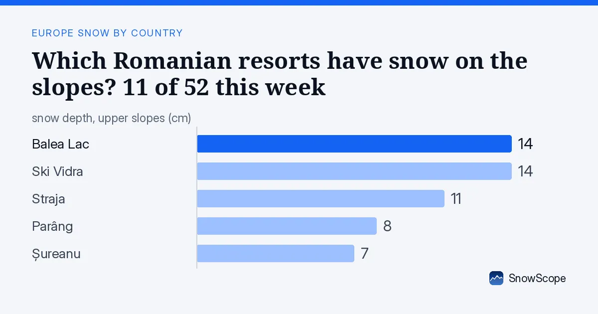
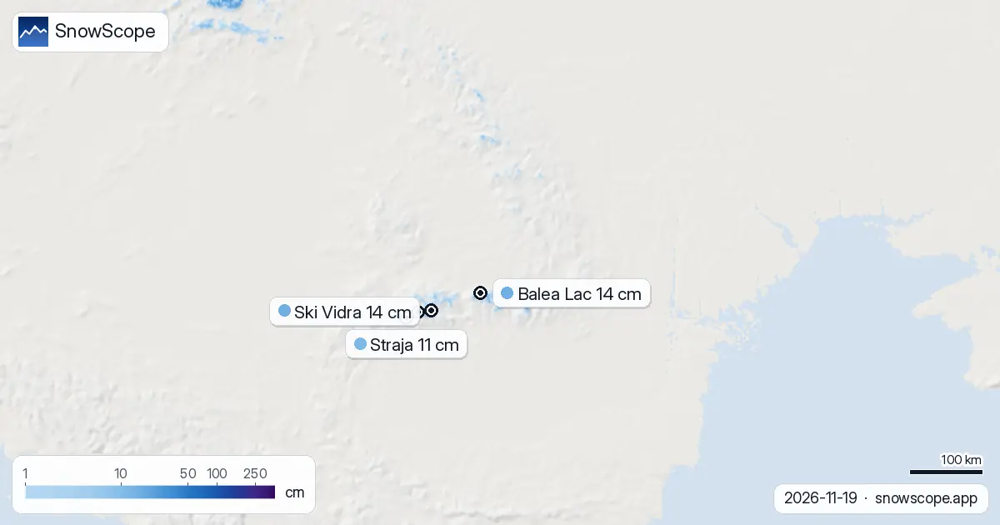

Which Romanian resorts have snow on the slopes? 11 of 52 this week
Early season snow is sparse across Romania right now. Only 11 of the country's 52 resorts have any measurable snow on their upper slopes, mostly above 2000 m where the air is cold enough to hold it.
See the live snow forecast for Balea Lac in the SnowScope appSnow depth, powder alerts and the 3D map, free.
Where the resorts stand today
The snow cover is thin and patchy at most lift stations. Balea Lac leads with 14 cm at 2032 m, followed by Ski Vidra and Straja with 14 cm and 11 cm respectively. Below 1500 m, there is essentially no snow anywhere in Romania today. The snow line sits at 1700 m, which means the lower resorts are still waiting.
This picture changed sharply in the past three days. Snow cover shrank from 3590 km² yesterday to 2530 km² today as warmer air moved in. A week ago, Romania had snow on 7470 km² of high ground, so we have lost ground steadily since mid-November.
| Resort | Snow depth | New snow, 72 h | Coming, next days | Top |
|---|---|---|---|---|
| Balea Lac | 14 cm | 5 cm | 8 cm | 2,032 m |
| Ski Vidra | 14 cm | 2 cm | 10 cm | 1,974 m |
| Straja | 11 cm | 0 cm | 9 cm | 1,865 m |
| Parâng | 8 cm | 0 cm | 11 cm | 1,768 m |
| Șureanu | 7 cm | 3 cm | 11 cm | 1,968 m |

Best conditions and depth by altitude
The Retezat hotspot has accumulated 46 cm in the past 72 hours and leads the country by far. The Rodna Mountains have gathered 24 cm, and the Parâng Mountains 13 cm. These are the only areas with real snow depth, and they sit in the highest parts of their ranges.
Above 2000 m, snow depth averages 12 cm across modelled terrain, with 99 percent coverage. Between 1500 and 2000 m, only 47 percent of terrain is covered and the mean depth is just 2 cm. Below 1500 m, snow is rare and shallow. If you want to ski on something solid, you need to be above 2000 m at a resort near one of these hotspots.
What the bands tell us
Altitude is everything right now. At 500–1000 m, there is zero snow. From 1000–1500 m, coverage is 2 percent and depth is nothing. The jump comes at 1500 m, where 47 percent of terrain has 2 cm, mostly on north-facing slopes. Only above 2000 m is the picture bright: 99 percent white and 12 cm deep on average.
This pattern is typical for early season in dry mountains. Nights are cold enough to preserve snow at altitude, but days are warm and low slopes still see rain or melt. Early snow is fragile. Rocky terrain and thin coverage mean hazards are closer to the surface.
The next week ahead
Snow is coming. Our model shows 13 cm of fresh snow in the next three days, with 23 November as the heaviest day at 14 cm. By then, resorts should see 8–11 cm of new cover. This will help the mid-altitude slopes and may push the snow line down a few hundred metres.
The outlook is mixed. Week two (27 November to 3 December) brings only 6 cm, but the signal for late November is clear. Balea Lac could see its depth double. Resorts in the Rodna and Retezat zones are well positioned to build a usable base by the weekend.
How the week has played out
Early November was unkind to the resorts. On 16 November, Borsec held 48 cm and 6630 km² of Romania was white. By 17 November, Havas Bucsin led with 31 cm and coverage had grown to 7710 km². But then a thaw set in. Yesterday, Ski Vidra held 30 cm while coverage had crashed to 3650 km². Today we are down to 2530 km² and Balea Lac is the leader at 14 cm.
This retreat is the story of November so far: snow came early to high ridges, but warm air has eaten it back. What remains is what the highest, most shaded terrain can keep.
Which slopes to watch
Balea Lac, Ski Vidra and the Retezat zone offer the most reliable conditions right now. Straja has 11 cm and will benefit from the coming snow. Parâng and Șureanu are building slowly but are worth watching from 23 November onward, when fresh snow arrives.
If you plan to ski in Romania this week, go high and go north-facing. Stay alert for thin cover and rocks. Check the official avalanche bulletin before any off-piste venture. The mountains are waking up, but they are not yet fully dressed.
Tips for skiers
- Ski above 2000 m where snow depth averages 12 cm and cover is near complete; lower slopes have little to nothing today.
- Head for the Retezat or Rodna Mountains if possible—they hold the deepest and most reliable snow on the high ridges.
- Wait for 23 November if you can; forecast shows 14 cm of fresh snow that day, which will improve conditions at all resorts, especially mid-altitude terrain.
- Watch for thin coverage and exposed rocks, especially below 2000 m where only 2 cm average depth lies between you and the ground.
- Check the official avalanche bulletin before leaving the pistes, as early-season snow on steep terrain can be unstable.
About these numbers
Resort snow depths are the deepest snow on the resort's upper slopes from the SnowScope snow model (about 1 km, run of 19 November); they are estimates for an area, not a measurement at one point. Station values are measurements on the date shown. Forecasts can change. Always read the official avalanche bulletin before going off-piste.
Cite this report
For research, teaching or the press: the numbers and charts are free to reuse under CC BY 4.0 with this citation.
SnowScope (2026), Which Romanian resorts have snow on the slopes? 11 of 52 this week, https://snowscope.app/blog/en/2026/11/romania-resorts-with-snow-19-november-2026.html, accessed 2026-11-19
SnowScope (Atlas Labs). (2026, November 19). Which Romanian resorts have snow on the slopes? 11 of 52 this week. SnowScope snow reports. https://snowscope.app/blog/en/2026/11/romania-resorts-with-snow-19-november-2026.html
BibTeX
@misc{snowscope2026romaniaresortswithsnow19,
author = {{SnowScope (Atlas Labs)}},
title = {Which Romanian resorts have snow on the slopes? 11 of 52 this week},
year = {2026},
month = nov,
howpublished = {\url{https://snowscope.app/blog/en/2026/11/romania-resorts-with-snow-19-november-2026.html}},
note = {Published 2026-11-19 12:29 UTC; accessed 2026-11-19}
}· CC BY 4.0 · Methods, data and tools →
Balea Lac: snow and temperature by height, this winter vs last (tools) →
Follow Balea Lac
Free: a message when fresh snow is coming, and the forecast every morning.
More snow reports

Savin Kuk above Žabljak picked up 22 cm of snow from 13 to 19 November and still has 6 cm today. Kolašin 1450 and 1600 are bare. The week day by day, and the next chances.

Up to 30 cm of snow fell on northern Velebit and Bjelolasica on Friday 13 November 2026. By Tuesday it was gone. Day by day, what the mountains kept, and when snow comes back.

December snow odds from 46 winters and checked day prices: Ski Cooper $49, Les 3 Vallées €75.70, Oukaïmeden no official tariff. Where a cheap December ski day works.